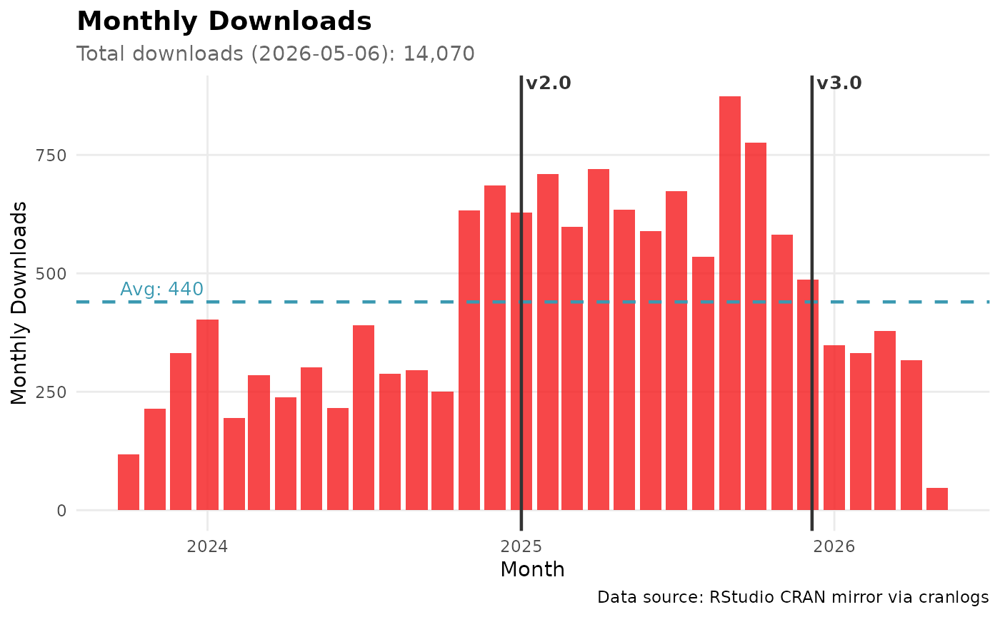

## ℹ Loading metadata database## ✔ Loading metadata database ... done## ## ## ✔ All system requirements are already installed.## ## ℹ No downloads are needed## ℹ Installing system requirements## ℹ Executing `sudo sh -c apt-get -y update`## Get:1 file:/etc/apt/apt-mirrors.txt Mirrorlist [144 B]## Hit:2 http://azure.archive.ubuntu.com/ubuntu noble InRelease## Hit:3 http://azure.archive.ubuntu.com/ubuntu noble-updates InRelease## Hit:4 http://azure.archive.ubuntu.com/ubuntu noble-backports InRelease## Hit:5 http://azure.archive.ubuntu.com/ubuntu noble-security InRelease
## Hit:6 https://packages.microsoft.com/repos/azure-cli noble InRelease## Hit:7 https://packages.microsoft.com/ubuntu/24.04/prod noble InRelease## Hit:8 https://dl.google.com/linux/chrome-stable/deb stable InRelease## Reading package lists...## ℹ Executing `sudo sh -c apt-get -y install libcurl4-openssl-dev libssl-dev`## Reading package lists...## Building dependency tree...## Reading state information...## libcurl4-openssl-dev is already the newest version (8.5.0-2ubuntu10.9).
## libssl-dev is already the newest version (3.0.13-0ubuntu3.9).
## 0 upgraded, 0 newly installed, 0 to remove and 58 not upgraded.## ✔ 2 pkgs + 22 deps: kept 24 [5.1s]